Subsections
Classical mechanics (often called Newtonian mechanics in honor of Isaac Newton) deal with forces and motions of objects in common circumstances. The vast majority of instrumentation applications deals with this realm of physics. Two other areas of physics, relativistic and quantum, will not be covered in this chapter because their domains lie outside the typical experience of industrial instrumentation1.7.
These laws were formulated by the great mathematician and physicist Isaac Newton (1642-1727). Much of Newton's thought was inspired by the work of an individual who died the same year Newton was born, Galileo Galilei (1564-1642).
- An object at rest tends to stay at rest; an object in motion tends to stay in motion
- The acceleration of an object is directly proportional to the net force acting upon it and inversely proportional to the object's mass
- Forces between objects always exist in equal and opposite pairs
Newton's first law may be thought of as the law of inertia, because it describes the property of inertia that all objects having mass exhibit: resistance to change in velocity. This law is quite counter-intuitive for many people, who tend to believe that objects require continual force to keep moving. While this is true for objects experiencing friction, it is not for ideal (frictionless) motion. This is why satellites and other objects in space continue to travel with no mode of propulsion: they simply “coast” indefinitely on their own inertia because there is no friction in space to dissipate their kinetic energy and slow them down.
Newton's second law is the verbal equivalent of the force/mass/acceleration formula:  . This law elaborates on the first, in that it mathematically relates force and motion in a very precise way. For a frictionless object, the change in velocity (i.e. its acceleration) is proportional to force. This is why a frictionless object may continue to move without any force applied: once moving, force would only be necessary for continued acceleration. If zero force is applied, the acceleration will likewise be zero, and the object will maintain its velocity indefinitely (again, assuming no friction at work).
. This law elaborates on the first, in that it mathematically relates force and motion in a very precise way. For a frictionless object, the change in velocity (i.e. its acceleration) is proportional to force. This is why a frictionless object may continue to move without any force applied: once moving, force would only be necessary for continued acceleration. If zero force is applied, the acceleration will likewise be zero, and the object will maintain its velocity indefinitely (again, assuming no friction at work).
Newton's third law describes how forces always exist in pairs between two objects. The rotating blades of a helicopter, for example, exert a downward force on the air (accelerating the air), but the air in turn exerts an upward force on the helicopter (suspending it in flight). A spider hanging on the end of a thread exerts a downward force (weight) on the thread, while the thread exerts an upward force of equal magnitude on the spider (tension). Force pairs are always equal in magnitude but opposite in direction.
Two very fundamental and closely-related concepts in physics are work and energy. Work is simply what happens when any force acts through a parallel motion, such as when a weight is lifted against gravity or when a spring is compressed. Energy is a more abstract concept and therefore more difficult to define. One definition1.8 of energy is “that which permits or results in motion,” where the word “motion” is used in a very broad sense including even the motion of individual atoms within a substance. Energy exists in many different forms, and may be transferred between objects and/or converted from one form to another, but cannot be created from nothing or be destroyed and turned into nothing (this is the Law of Energy Conservation). Power is the rate at which work is done, or alternatively the rate at which energy transfer occurs.
First, just a little bit of math. Work ( ) is mathematically defined as the dot-product of force (
) is mathematically defined as the dot-product of force ( ) and displacement (
) and displacement ( ) vectors1.9, written as follows:
) vectors1.9, written as follows:
Where,
= Work, in newton-meters (metric) or foot-pounds (British)
 = Force vector (force and direction exerted) doing the work, in newtons (metric) or pounds (British)
= Force vector (force and direction exerted) doing the work, in newtons (metric) or pounds (British)
= Displacement vector (distance and direction traveled) over which the work was done, in meters (metric) or feet (British)
The fact that both force and displacement appear as vectors tells us their relative directions are significant to the calculation of work. If the force and displacement vectors point in exactly the same direction, work is simply the product of and magnitudes (). If the force and displacement vectors point in opposite directions, work is the negative product (). Another way to express the calculation of work is as the product of the force and displacement magnitudes ( and ) and the cosine of the angle separating the two force vectors (
):
When the two vectors and point the same direction, the angle  between them is zero and therefore because
. When the two vectors point in opposite directions, the angle between them is 180
between them is zero and therefore because
. When the two vectors point in opposite directions, the angle between them is 180 and therefore because
.
and therefore because
.
This means if a force acts in the same direction as a motion (i.e. force and displacement vectors pointing in the same direction), the work being done by that force will be a positive quantity. If a force acts in the opposite direction of a motion (i.e. force and displacement vectors pointing in opposite directions), the work done by that force will be a negative quantity. If a force acts perpendicularly to the direction of a motion (i.e. force and displacement vectors at right angles to each other), that force will do zero work.
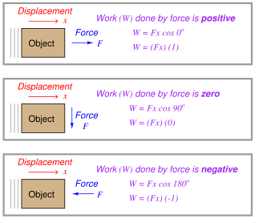
Illustrations are helpful in explaining these concepts. Consider a crane hoisting a 2380 pound weight 15 feet up into the air by means of an attached cable:
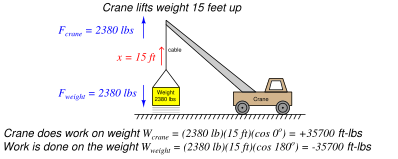
The amount of work done from the crane's perspective is
ft-lbs, since the crane's force (
2380 lbs, up) points in the same upward direction as the cable's motion ( 15 ft, up) and therefore there is no angular difference between the crane force and motion vectors (i.e.
). The amount of work done from weight's perspective, however, is
ft-lbs because the weight's force vector (
2380 lbs, down) points in the opposite direction as the cable's motion vector ( 15 feet, up), yielding an angular difference of
. Another way of expressing these two work values is to state the crane's work in the active voice and the weight's work in the passive voice: the crane did 35700 ft-lbs of work, while 35700 ft-lbs of work was done on the weight. This language is truly appropriate, as the crane is indeed the active agent in this scenario, while the weight passively opposes the crane's efforts. In other words, the crane is the motive source of the work, while the weight is a load.
Now, how does energy fit into this illustration? Certainly we see that motion occurred, and therefore energy must have been involved. The energy lifting the 2380 pound weight 15 feet upward didn't come from nowhere – it must have been present somewhere in the universe prior to the weight's ascension if the Law of Energy Conservation is indeed true. If the crane is powered by an internal combustion engine, the energy came from the fuel stored in the crane's fuel tank. If the crane is electric, the energy to hoist the weight came from a battery or from an electrical generator somewhere sending power to the crane through an electric cable. The act of lifting the weight was actually an act of energy transfer from the crane's energy source, through the crane motor and cable, and finally to the weight. Along the way, some of the initial energy was also converted into heat through inefficiencies in the crane's motor and mechanism. However, if we were to calculate the sum of all the energy transferred to the lifted weight plus all energy “dissipated” in the form of heat, that total must be precisely equal to the initial energy of the fuel (or electricity) used by the crane in doing this lift. In other words, the sum total of all energy in the universe is the same after the lift as it was before the lift.
Power applies in this scenario to how quickly the weight rises. So far, all we know about the weight's lifting is that it took 35700 ft-lbs of energy to do that work. If we knew how long it took the crane to do that work, we could calculate the crane's power output. For example, a crane with a power rating of 35700 ft-lbs per second could complete this 15-foot lift in only one second of time. Likewise, a crane with a power rating of only 3570 ft-lbs per second would require 10 seconds of time to execute the same lift.
An interesting thing happens if the crane moves sideways along the ground after lifting the weight 15 feet up into the air. No work is being done by the crane on the weight, or by the weight on the crane, because the displacement vector is now perpendicular (
) to both force vectors:
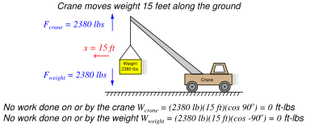
It should be noted that the crane's engine will do work as it overcomes rolling friction in the wheels to move the crane along, but this is not work done on or by the hoisted weight. When we calculate work – as with all other calculations in physics – we must be very careful to keep in mind where the calculation(s) apply in the scenario. Here, the forces and displacement with regard to the hoisted weight are perpendicular to each other, and therefore no work is being done there. The only work done anywhere in this system as the crane rolls 15 feet horizontally involves the horizontal force required to roll the crane, which is unspecified in this illustration.
Similarly, there is no transfer of energy to or from the hoisted weight while the crane rolls along. Whatever energy comes through the crane's engine only goes into overcoming rolling friction at the wheels and ground, not to do any work with the weight itself. Generally this will be a very small amount of energy compared to the energy required to hoist a heavy load.
A good question to ask after hoisting the weight is “Where did that 35700 ft-lbs of energy go after the lift was complete?” The Law of Energy Conservation tells us that energy cannot be destroyed, and so the 35700 ft-lbs of work must be accounted for somehow. In this case, the energy is now stored in the weight where it may be released at some later time. We may demonstrate this fact by slowly lowering the weight back down to the ground and watching the energy transfer:
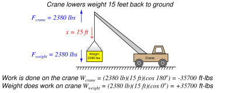
Notice how the weight is now the actively-working object in the system, doing work on the crane. The crane is now the passive element, opposing the work being done by the weight. Both the crane and the weight are still pulling the same directions as before (crane pulling up, weight pulling down), but now the direction of displacement is going down which means the weight is “winning” and therefore doing the work, while the crane is “losing” and opposing the work.
If we examine what is happening inside the crane as the weight descends, we see that energy is being transferred from the descending weight to the crane. In most cranes, the descent of a load is controlled by a brake mechanism, regulating the speed of descent by applying friction to the cable's motion. This brake friction generates a great deal of heat, which is a form of energy transfer: energy stored in the elevated weight is now being converted into heat which exits the crane in the form of hot air (air whose molecules are now vibrating at a faster speed than they were at their previous temperature). If the crane is electric, we have the option of regenerative braking where we recapture this energy instead of dissipating it in the form of heat. This works by switching the crane's electric motor into an electric generator on demand, so the weight's descent turns the motor/generator shaft to generate electricity to re-charge the crane's battery or be injected back into the electric power grid to do useful work elsewhere.
Referring back to the illustration of the crane hoisting the weight, it is clear that the weight stored energy while it was being lifted up by the crane, and released this energy back to the crane while it was being lowered down to the ground. The energy held by the elevated weight may therefore be characterized as potential energy, since it had the potential to do work even if no work was being done by that energy at that moment.
A special version of the general work formula
exists for calculating this gravitational potential energy. Rather than express force and displacement as vectors with arbitrary directions, we express the weight of the object as the product of its mass and the acceleration of gravity () and the vertical displacement of the object simply as its height above the ground ( ). The amount of potential energy stored in the lift is simply equal to the work done during the lift (
). The amount of potential energy stored in the lift is simply equal to the work done during the lift ( ):
):
Where,
= Gravitational potential energy in newton-meters (metric) or foot-pounds (British)
 = Mass of object in kilograms (metric) or slugs (British)
= Mass of object in kilograms (metric) or slugs (British)
 = Acceleration of gravity in meters per second squared (metric) or feet per second squared (British)
= Acceleration of gravity in meters per second squared (metric) or feet per second squared (British)
 = Height of lift in meters (metric) or feet (British)
= Height of lift in meters (metric) or feet (British)
There is no need for vectors or cosine functions in the formula, because gravity and height are always guaranteed to act along the same axis. A positive height (i.e. above ground level) is assumed to yield a positive potential energy value for the elevated mass.
Many different forms of potential energy exist, although the standard “textbook” example is of a mass lifted to some height against the force of gravity. Compressed (or stretched) springs have potential energy, as do pressurized fluids, chemical bonds (e.g. fuel molecules prior to combustion), hot masses, electrically-charged capacitors, and magnetized inductors. Any form of energy with the potential to be released into a different form at some later time is, by definition, potential energy.
An important application of work, energy, and power is found in rotational motion. Consider the application of a truck towing some load by a rope. The truck exerts a linear (i.e. straight-line) pulling force on the load being towed, but it must do so by applying a rotary (i.e. turning) force through the axle shaft powering the drive wheels:
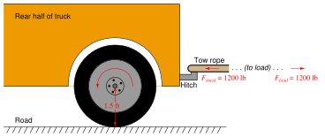
Clearly, the truck does work on the load by exerting a pulling force in the direction of motion. If we wish to quantify this work, we may consider the work done by the truck as it tows the load a distance of 40 feet:
It should also be clear that work is being done on the load, since the load's force on the tow rope points in the opposite direction of its motion:
For the sake of this example, it matters not what happens to the energy delivered to the load. Perhaps it gets converted to heat through the mechanism of friction at the load (e.g. friction from road contact, friction from wind resistance), perhaps it gets converted into potential energy in the case of the road inclining to a greater altitude, or perhaps (most likely) it is some combination of all these.
In order to quantify this amount of work from the perspective of the truck's rotating wheel, we must cast the variables of pulling force and pulling distance into rotary terms. We will begin by first examining the distance traveled by the wheel. Any circular wheel has a radius, and the wheel must turn a certain number of revolutions in order to pull the load any distance. The obvious function of a wheel is to convert between linear and rotary motion, and the common measure between these two motions is the circumference of the wheel: each revolution of the wheel equates directly to one circumference's worth of linear travel. In our truck example, the wheel has a radius of 1.5 feet, which means it must have a circumference of 9.425 feet (i.e.
feet, since
). Therefore, in order to travel 40 linear feet this wheel must rotate 4.244 times (i.e. 40 feet  9.425 feet/revolution = 4.244 revolutions).
9.425 feet/revolution = 4.244 revolutions).
Next, we must relate pulling force to rotational force. The 1200 pounds of pulling force exerted by the wheel1.10 originates from the twisting force exerted by the axle at the wheel's center. The technical term for this twisting force is torque (symbolized by the Greek letter “tau”,  ), and it is a function of both the linear pulling force and the wheel's radius:
), and it is a function of both the linear pulling force and the wheel's radius:
Solving for torque () in this application, we calculate 1800 pound-feet given the wheel's linear pulling force of 1200 pounds and a radius of 1.5 feet. Please note that the unit of “pound-feet” for torque is not the same as the unit of “foot-pounds” for work. Work is the product of force and displacement (distance of motion), while torque is the product of force and radius length. Work requires motion, while torque does not1.11.
The torque value of 1800 lb-ft and the turning of 4.244 revolutions should be sufficient to calculate work done by the wheel, since torque equates directly to pulling force and the number of revolutions equates directly to pulling distance. It should be obvious that the product of 1800 lb-ft and 4.244 revolutions does not, however, equal 48000 ft-lbs of work, and so our torque-revolutions-work formula must contain an additional multiplication factor  :
:
Substituting 48000 ft-lbs for work (), 1800 lb-ft for torque (), and 4.244 for the number of revolutions (), we find that must be equal to 6.283, or . Knowing the value for , we may re-write our rotational work formula more precisely:
This formula is correct no matter the wheel's size. A larger-radius wheel will certainly travel farther for each revolution, but that larger radius will proportionately reduce the pulling force for any given amount of torque, resulting in an unchanged work value.
Applying this work formula to another application, let us consider an electric winch where a load is lifted against the force of gravity. A “winch” is a mechanism comprised of a tubular drum and cable, the cable wrapping or unwrapping around the drum as the drum is turned by an electric motor. For comparison we will use the same weight and lifting distance of the crane example, merely replacing the crane with a winch located atop a tower. In this case we will make the winch drum 3 inches in diameter, and calculate both the torque required to rotate the drum as well as the number of rotations necessary to lift the weight 15 feet:
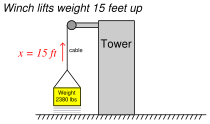
From the crane example we already know the amount of work which must be done on the weight to hoist it 15 feet vertically: 35700 ft-lbs. Our rotational work formula (
) contains two unknowns at this point in time, since we know the value of but not or . This means we cannot yet solve for either or using this formula. If we also knew the value of we could solve for and vice-versa, which means we must find some other way to solve for one of those unknowns.
A drum radius of 3 inches is equivalent to 0.25 feet, and since we know the relationship between radius, force, and torque we may solve for torque in that manner:
Now that we have a value for we may substitute it into the rotational work formula to solve for the number of necessary drum rotations:
As always, energy is conserved in this electric winch system just as it is in any other system. The 35700 foot-pounds of energy invested in the gravitational potential energy of the weight had to originate from somewhere, which in the case of an electric winch is the electrical power source feeding the winch motor. If that winch motor were allowed to turn in reverse and act as a generator, it would convert the descending weight's loss in potential energy into electrical power to be returned to the source, whether that source by a rechargeable battery or an electrical power “grid” with other electrical loads that may use that energy.
The same, of course, is true for the tow truck example. The energy expended in towing the load must come from somewhere, and in the case of a combustion-type truck engine that source is the fuel powering the engine. For electric vehicles, the energy source is a rechargeable battery, and the reversible nature of electric motors means the vehicle may use its drive motor as a generator to “brake” (slow down), returning the vehicle's kinetic energy into electrical energy to recharge the battery for later use. This is why all-electric and hybrid-electric vehicles are remarkably efficient in stop-and-go traffic conditions: they utilize their drive motors as regenerative brakes to recover the vehicle's kinetic energy rather than dissipating that same energy in the form of heat using friction-based brake mechanisms.
Many applications exist within the industrial world for rotational work and electric motors. Conveyor belts, pumps, fans, compressors, and a host of other mechanisms may be powered via electric motors, the speed and torque of those electric motors controlled using electronic circuits called motor drives. Alternating-current (AC) electric motors are controlled by electronic devices called Variable Frequency Drives, or VFDs, which achieve precise speed control by varying the frequency of the AC power feeding the motor, and achieve precise torque control by varying the voltage and current feeding the motor. VFDs are very important “final control” devices used in a wide variety of industrial control systems.
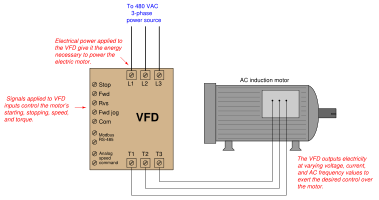
Sophisticated VFDs control regeneration as well (i.e. using the motor as a generator to “brake” a rotating machine), allowing energy to be applied to and then extracted from the same mechanism.
Potential energy is an important principle not just in the study of physics, but also for workplace safety. When large amounts of potential energy are released, the effects may be hazardous to personnel and/or destructive to equipment. An industrial maintenance procedure known as lock-out/tag-out (LOTO) requires that all potential energy sources on a system must either be exhausted or otherwise secured to that there will be negligible risk to maintenance personnel as they perform work on a system. The most common way to ensure this is to place a padlock on each energy-disconnect device (e.g. switch, valve, etc.) to secure its position so that potential energy cannot be released in a hazardous or destructive way. Each maintenance worker places a padlock on that disconnect device to prevent its actuation, and also places a tag on the device explaining when and why it was secured. Each and every person performing work on the system must use their own personal padlock, so that the system cannot be re-activated without the active consent of all persons working on that system.
An efficient strategy for safely locking out a large number of safety-disconnect devices on a system with multiple personal locks is to use a sheet-metal box containing a numbered padlock (with matching key) for each energy-flow device to be secured on the equipment, as well as a list identifying which lock goes on which energy-flow device. Each energy-disconnect device is placed in the safe position and then locked in that position with a dedicated padlock. After that, all the padlock keys are placed back inside the sheet-metal box. The lid of this box is then shut and secured with a multi-lock device, permitting multiple peoples' personal locks to be applied so the lid cannot be opened unless all personal locks are removed from it:
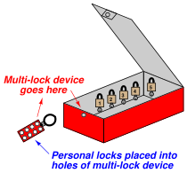
None of the energy-securing devices may be altered unless all personal locks have been removed from the lock box, thereby ensuring the safety of all persons working on the system.
Procedures created and maintained at the worksite will identify the energy-flow devices in need of securing prior to commencement of work on a piece of equipment. These procedures are literally life-saving documents, as they ensure no energy-securing device is overlooked by personnel doing work on the equipment or system.
A photograph of such a document – appropriately titled an “Energy Control Procedure” – shows the steps mandated to secure all potential energy sources prior to commencing work on a large industrial engine. This procedure also serves to document which locks were used to secure which energy flow devices during the procedure, as well as who performed the procedure:
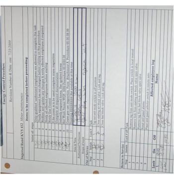
Note the particular lock-out steps required in this procedure: switching the control mode to the “off” position and tagging it, closing the fuel gas valve supplying fuel to the engine and locking/tagging it, and finally closing the valve supplying high-pressure air for engine starting and locking/tagging it. The closure of the starting air valve prevents the engine from being pneumatically turned while personnel are performing work on it. The closure of the fuel gas valve eliminates hazards resulting from the pressure of the fuel gas as well as its chemical energy (i.e. fire hazard) and/or biological threats (poisoning or asphyxiation). Note also how this procedure lists steps of notification to be taken prior to locking or tagging anything on the engine, as well as any other procedures possibly necessary (e.g. inspecting the maintenance crane if that will be needed for work on the engine).
The following is a set of incomplete lists of various energy-securing devices and energy sources which may be “locked out” for maintenance on a larger system:
Electrical energy
- Circuit breaker (locked in “off” position, also “racked out” if possible)
- Grounding switch (locked in “on” position to positively ground power conductors)
- Power cord (plastic cap locked onto plug, covering prongs)
Mechanical energy
- Block valve (locked in “shut” position) to prevent pressurized fluid motion
- Flange blind (installed in line) to prevent pressurized fluid motion
- Vent valve (locked in “open” position) to prevent fluid pressure buildup
- Mechanical clutch (disengaged, and locked in that position) to prevent prime mover from moving something
- Mechanical coupling (disassembled, and locked in that state) to prevent prime mover from moving something
- Mechanical brake (engaged, and locked in that position) to prevent motion
- Mechanical locking pin (inserted, and held in position by a padlock) to prevent motion
- Raised masses lowered to ground level, with lifting machines locked out
Chemical energy
- Block valve (locked in “shut” position) to prevent chemical fluid entry
- Vent valve (locked in “open” position) to prevent chemical fluid pressure buildup
- Ventilation fan (locked in “run” state) to prevent chemical vapor buildup
With all these preventive measures, the hope is that no form of potential energy great enough to pose danger may be accidently released.
Let us return to the crane illustration to explore another concept called kinetic energy. As you might guess by the word “kinetic,” this form of energy exists when an object is in the process of moving. Let's imagine the crane lifting the 2380 pound weight 15 feet up into the air, and then the cable snapping apart so that the weight free-falls back to the ground:
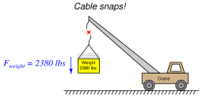
The Conservation of Energy still (and always!) holds true: all the potential energy stored in the elevated weight must be accounted for, even when it free-falls. What happens, of course, is that the weight accelerates toward the ground at the rate determined by Earth's gravity: 32.2 feet per second per second (32.2 ft/s ). As the weight loses height, its potential energy decreases according to the gravitational potential energy formula (), but since we know energy cannot simply disappear we must conclude it is taking some other form. This “other form” is based on the weight's velocity (
). As the weight loses height, its potential energy decreases according to the gravitational potential energy formula (), but since we know energy cannot simply disappear we must conclude it is taking some other form. This “other form” is based on the weight's velocity ( ), and is calculated by the kinetic energy formula:
), and is calculated by the kinetic energy formula:
Where,
= Kinetic energy in joules or newton-meters (metric), or foot-pounds (British)
= Mass of object in kilograms (metric) or slugs (British)
= Velocity of mass in meters per second (metric) or feet per second (British)
Thus, the Conservation of Energy explains why a falling object must fall faster as it loses height: kinetic energy must increase by the same amount that potential energy decreases, if energy is to be conserved. A very small amount of this falling weight's potential energy will be dissipated in the form of heat (as air molecules are disturbed) rather than get converted into kinetic energy. However, the vast majority of the initial 35700 ft-lbs of potential energy gets converted into kinetic energy, until the weight's energy is all kinetic and no potential the moment it first touches the ground.
When the weight finally slams into the ground, all that (nearly 35700 ft-lbs) of kinetic energy once again gets converted into other forms. Compression of the soil upon impact converts much of the energy into heat (molecular vibrations). Chunks of soil ejected from the impact zone possess their own kinetic energy, carrying that energy to other locations where they slam into other stationary objects. Sound waves rippling through the air also convey energy away from the point of impact. All in all, the 35700 ft-lbs of potential energy which turned into (nearly) 35700 ft-lbs of kinetic energy at ground level becomes dispersed.
The Law of Energy Conservation is extremely useful in projectile mechanics problems, where we typically assume a projectile loses no energy and gains no energy in its flight. The velocity of a projectile, therefore, depends on its height above the ground, because the sum of potential and kinetic energies must remain constant:
As a projectile rises in altitude (i.e. its gravitational potential energy increases), its velocity must slow down (i.e. its kinetic energy decreases) in order that its total energy remain the same in accordance with the Law of Energy Conservation.
In free-fall problems, where the only source of energy for a projectile is its initial height, the initial potential energy must be equal to the final kinetic energy:
We can see from this equation that mass cancels out of both sides, leaving us with this simpler form:
It also leads to the paradoxical conclusion that the mass of a free-falling object is irrelevant to its velocity. That is, both a heavy object and a light object in free fall hit the ground with the same velocity, and fall for the same amount of time, if released from the same height under the influence of the same gravity1.12.
Dimensional analysis confirms the common nature of energy whether in the form of potential, kinetic, or even mass (as described by Einstein's equation). First, we will set these three energy equations next to each other for comparison of their variables:
Next, we will dimensionally analyze them using standard SI metric units (kilogram, meter, second). Following the SI convention, mass () is always expressed in kilograms [kg], distance () in meters [m], and time ( ) in seconds [s]. This means velocity (, or
) in seconds [s]. This means velocity (, or  for the speed of light) in the SI system will be expressed in meters per second [m/s] and acceleration (
for the speed of light) in the SI system will be expressed in meters per second [m/s] and acceleration ( , or for gravitational acceleration) in meters per second squared [m/s]:
, or for gravitational acceleration) in meters per second squared [m/s]:
In all three cases, the unit for energy is the same: kilogram-meter squared per second squared. This is the fundamental definition of a “joule” of energy (also equal to a “newton-meter” of energy), and it is the same result given by all three formulae.
Power is defined as the rate at which work is being done, or the rate at which energy is transferred. Mathematically expressed, power is the first time-derivative of work ():
The metric unit of measurement for power is the watt, defined as one joule of work performed per second of time. The British unit of measurement for power is the horsepower, defined as 550 foot-pounds of work performed per second of time.
Although the term “power” is often colloquially used as a synonym for force or strength, it is in fact a very different concept. A “powerful” machine is not necessarily a machine capable of doing a great amount of work, but rather (more precisely) a great amount of work in a short amount of time. Even a “weak” machine is capable of doing a great amount of work given sufficient time to complete the task. The “power” of any machine is the measure of how rapidly it may perform work.
Many instruments make use of springs to translate force into motion, or vice-versa. The basic “Ohm's Law” equation for a mechanical spring relating applied force to spring motion (displacement) is called Hooke's Law1.13:
Where,
= Force generated by the spring in newtons (metric) or pounds (British)
= Constant of elasticity, or “spring constant” in newtons per meter (metric) or pounds per foot (British)
= Displacement of spring in meters (metric) or feet (British)
Hooke's Law is a linear function, just like Ohm's Law is a linear function: doubling the displacement (either tension or compression) doubles the spring's force. At least this is how springs behave when they are displaced a small percentage of their total length. If you stretch or compress a spring more substantially, the spring's material will become strained beyond its elastic limit and either yield (permanently deform) or fail (break).
The amount of potential energy stored in a tensed spring may be predicted using calculus. We know that potential energy stored in a spring is the same as the amount of work done on the spring, and work is equal to the product of force and displacement (assuming parallel lines of action for both):
Thus, the amount of work done on a spring is the force applied to the spring ( ) multiplied by the displacement (). The problem is, the force applied to a spring varies with displacement and therefore is not constant as we compress or stretch the spring. A mathematician would say that the spring's force is a function of because the force varies as varies. Thus, in order to calculate the amount of potential energy stored in the spring (), we must calculate the amount of energy stored over infinitesimal amounts of displacement (, or ) and then add those bits of energy up () to arrive at a total:
) multiplied by the displacement (). The problem is, the force applied to a spring varies with displacement and therefore is not constant as we compress or stretch the spring. A mathematician would say that the spring's force is a function of because the force varies as varies. Thus, in order to calculate the amount of potential energy stored in the spring (), we must calculate the amount of energy stored over infinitesimal amounts of displacement (, or ) and then add those bits of energy up () to arrive at a total:
We may evaluate this integral using the power rule ( is raised to the power of 1 in the integrand):
Where,
= Energy stored in the spring in joules (metric) or foot-pounds (British)
= Constant of elasticity, or “spring constant” in newtons per meter (metric) or pounds per foot (British)
= Displacement of spring in meters (metric) or feet (British)
= The constant of integration, representing the amount of energy initially stored in the spring prior to our displacement of it
For example, if we take a very large spring with a constant equal to 60 pounds per foot and displace it by 4 feet, we will store 480 foot-pounds of potential energy in that spring (i.e. we will do 480 foot-pounds of work on the spring).
Graphing the force-displacement function on a graph yields a straight line (as we would expect, because Hooke's Law is a linear function). The area accumulated underneath this line from 0 feet to 4 feet represents the integration of that function over the interval of 0 to 4 feet, and thus the amount of potential energy stored in the spring:
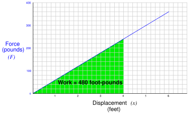
Note how the geometric interpretation of the shaded area on the graph exactly equals the result predicted by the equation
: the area of a triangle is one-half times the base times the height. One-half times 4 feet times 240 pounds is 480 foot-pounds.
Rotational motion may be quantified in terms directly analogous to linear motion, using different symbols and units.
The rotational equivalent of linear force () is torque (). Linear force and rotational torque are both vector quantities, mathematically related to one another by the radial distance separating the force vector from the centerline of rotation. To illustrate with a string pulling on the circumference of a wheel:
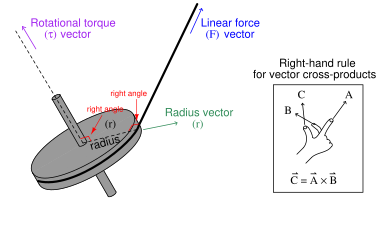
This relationship may be expressed mathematically as a vector cross-product, where the vector directions are shown by the right-hand rule (the first vector is the direction of the index finger, the second vector is the direction of the middle finger, and the product vector
is the direction of the thumb, with all three vectors perpendicular to each other):
Labeling force, radius, and torque as vectors is the formally correct way of noting the variables in a mechanical system such as this, and is the way college students studying physics typically learn the calculation of torque. In less academic settings, the force vector () is typically labeled as a force along the line of action, and the radius vector () is called the moment arm, with the line of action and moment arm always being perpendicular to each other.
The proper unit of measurement for torque is the product of the force unit and distance unit. In the metric system, this is customarily the Newton-meter (N-m). In the British system, this is customarily the foot-pound (ft-lb) or alternatively the pound-foot (lb-ft). Note that while these are the exact same units as those used to express work, they are not the same types of quantities. Torque is a vector cross-product, while work is a dot-product (
). The cross-product of two vectors is always another vector1.14, while the dot-product of two vectors is always a scalar (direction-less) quantity. Thus, torque always has a direction, whereas work or energy does not.
An example calculation applied to a hand wrench turning a bolt appears here:
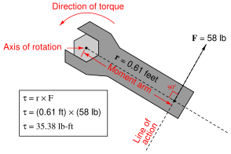
With the radius and force vectors at right angles to each other, torque is simply the product of both. In many non-academic settings, torque is calculated this way as a scalar quantity, with the direction of rotation determined by observation rather than by strict adherence to the right-hand rule of vector cross products. In this example, we see the magnitude of torque as the simple product of 58 pounds force and 0.61 feet of moment arm (35.38 lb-ft of torque), with the torque direction obviously counter-clockwise as viewed from the head of the bolt.
If we apply the same force to the wrench handle at a different angle (not perpendicular to the handle), the resulting torque will be less. The radius vector (moment arm), however, will still remain perpendicular to the force vector (line of action) – it just decreases in length. To determine the placement of the radius vector, all one must do is draw a line straight from the axis of rotation perpendicular to the line of action, then use trigonometry to calculate its magnitude:
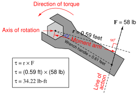
A very practical example of torque is in the action of meshing gears, transferring mechanical power from one gear to another. Each gear effectively acts as a wheel, the point of contact between gear teeth acting to transfer force perpendicular to the radius of each gear (wheel). Thus, torque applied to one gear becomes a linear force at the meshing teeth, which translates into another torque at the second gear:
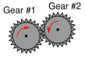
The ratio of torques between two meshing gears is equal to the ratio of gear teeth:
Where,
= Torque of first gear
= Torque of second gear
= Number of teeth on first gear
= Number of teeth on second gear
For example, if a small gear having 28 teeth meshes with a larger gear having 75 teeth, the torque multiplication factor from the small gear to the large gear will be 75:28, or 2.679 to 1. A torque of 40 lb-ft applied to the small gear will result in a torque of 107.1 lb-ft or torque generated at the large gear. This ratio of gear teeth is called the gear ratio.
As gears multiply torque (), they divide rotational speed (). Thus, the 75:28 tooth gear set creates a multiplication of torque from the small gear to the large gear, and an identical reduction ratio of speed from the small gear to the large gear. Given this ratio, the small gear will have to be turned 2.679 revolutions in order to make the large gear turn just one revolution.
We may express gear speeds as another ratio of gear teeth, reciprocated in relation to torque:
Where,
= Rotational speed of first gear
= Rotational speed of second gear
= Number of teeth on first gear
= Number of teeth on second gear
In a set of meshed gears, the smaller gear will have the least torque and the greatest speed; the larger gear will have the greatest torque and the least speed.
This is precisely how gear sets are used in industry: to transform torque and speed in mechanical power systems. The complementary effects of a gear set on torque and speed is analogous to the complementary effects that a transformer has on AC voltage and current: a step-up transformer (having more turns of wire in the secondary coil than in the primary coil) will multiply voltage but reduce (divide) current, both by the same turns ratio.
Every quantity of force and motion which may be expressed in linear form has a rotational equivalent. As we have seen, torque () is the rotational equivalent of force (). The following table contrasts equivalent quantities for linear and rotational motion (all units are metric, shown in italic font):
Familiar equations for linear motion have rotational equivalents as well. For example, Newton's Second Law of motion states, “The acceleration of an object is directly proportional to the net force acting upon it and inversely proportional to the object's mass.” We may modify this law for rotational motion by saying, “The angular acceleration of an object is directly proportional to the net torque acting upon it and inversely proportional to the object's moment of inertia.” The mathematical expressions of both forms of Newton's Second Law are as follows:
The calculus-based relationships between displacement (), velocity (), and acceleration () find parallels in the world of angular motion as well. Consider the following formula pairs, linear motion on the left and angular motion on the right:
An object's “moment of inertia” represents its angular inertia (opposition to changes in rotational velocity), and is proportional to the object's mass and to the square of its radius. Two objects having the same mass will have different moments of inertia if there is a difference in the distribution of their mass relative to radius. Thus, a hollow tube will have a greater moment of inertia than a solid rod of equal mass, assuming an axis of rotation in the center of the tube/rod length:
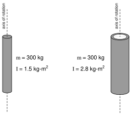
This is why flywheels1.15 are designed to be as wide as possible, to maximize their moment of inertia with a minimum of total mass.
The formula describing the amount of work done by a torque acting over an angular displacement is remarkably similar to the formula describing the amount of work done by a force acting over a linear displacement:
The formula describing the amount of kinetic energy possessed by a spinning object is also similar to the formula describing the amount of energy possessed by a linearly-traveling object: